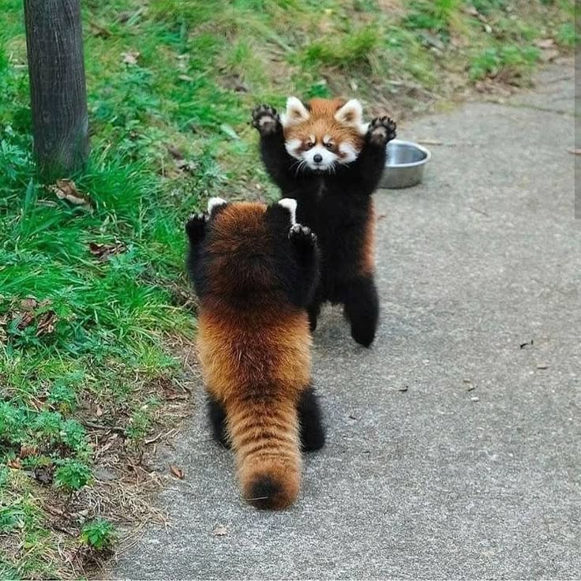
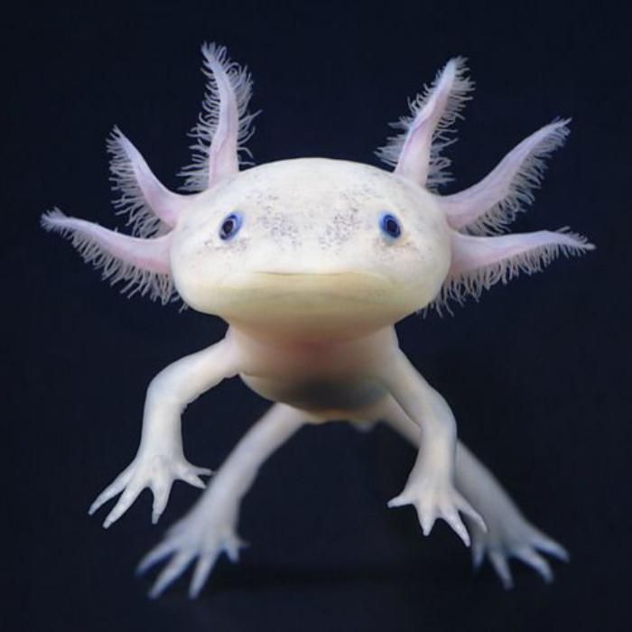
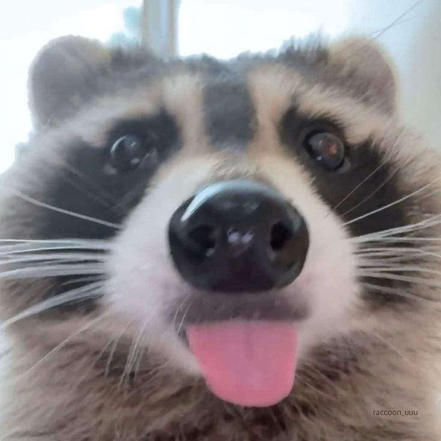
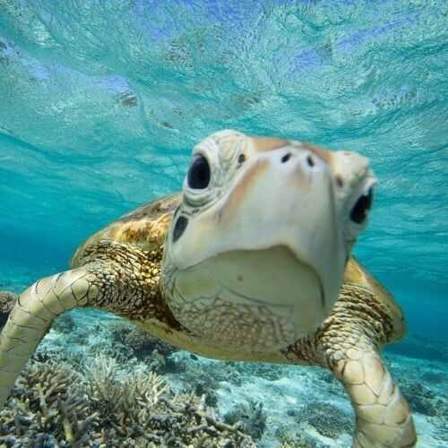
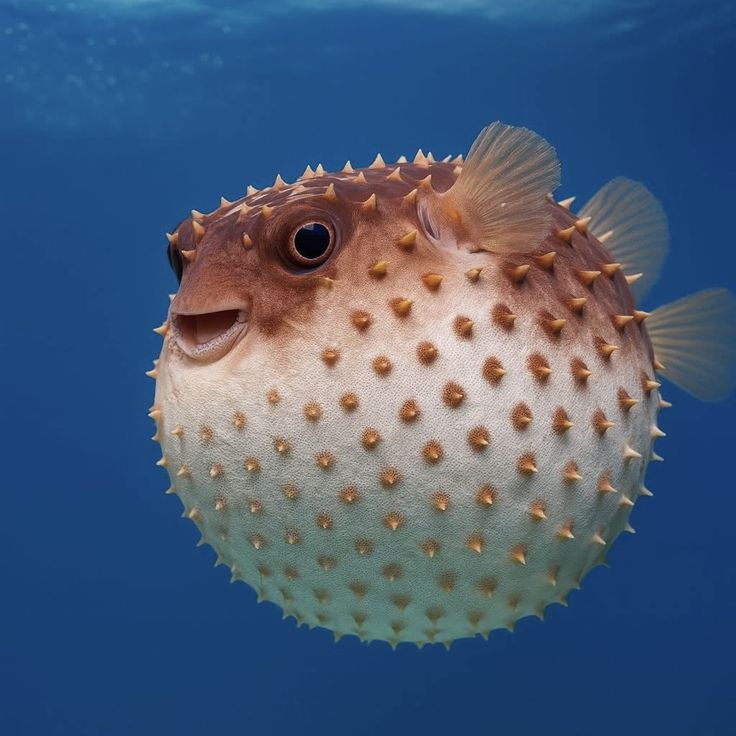
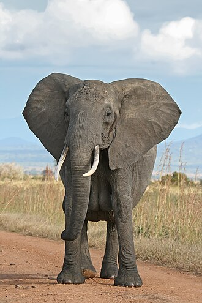

A vörös panda kis termetű, fára mászó állat, amely főként bambuszt, gyümölcsöket és rovarokat fogyaszt.
Az óriáspanda főként bambuszt eszik, és a világ egyik legismertebb és legkedveltebb állata.

Az axolotl különleges kétéltű, amely képes elvesztett testrészeit újranöveszteni.
A fehér fóka vastag zsírréteggel rendelkezik, amely megvédi a hideg vizekben.

A mosómedve intelligens állat, amely gyakran vízben "mossa" meg a táplálékát.

A teknősök kemény páncéllal rendelkeznek, amely megvédi őket a ragadozóktól.

A gömbhal veszély esetén felfújja magát, és sok faja mérgező.

Az afrikai elefánt a legnagyobb szárazföldi emlős, amely hatalmas füleiről és kiváló memóriájáról ismert.
A pingvinek remek úszók, szárnyaik uszonyszerűek, a víz alatt gyorsan és ügyesen vadásznak halakra.